Projeto: Dashboard de Análise de Perfil de Mentorado e Potencial de Carreira
Introdução
Este projeto apresenta um Dashboard analítico desenvolvido para traçar o perfil de indivíduos interessados em mentoria e desenvolvimento de carreira. O principal objetivo é fornecer uma visão detalhada sobre as características demográficas, formação acadêmica, experiência profissional, nível de conhecimento em diversas ferramentas e tecnologias, e aspirações de carreira dos mentorados. O painel visou capacitar a empresa que trabalha com programas de mentoria a compreender melhor seu público-alvo, personalizar as ofertas de capacitação, otimizar a alocação de recursos e identificar talentos com alto potencial para desenvolvimento e migração de área.
Estrutura do Projeto
O dashboard é organizado para oferecer uma análise multidimensional do perfil dos indivíduos:
- Visão Geral do Perfil: Total de pessoas analisadas, distribuição por gênero e taxa de conversão.
- Dados Demográficos: Faixa etária, estado civil, origem do lead e distribuição geográfica por estado.
- Perfil Profissional e Acadêmico: Média salarial, formação, interesse em migrar para outras áreas e tempo disponível para estudo.
- Nível de Conhecimento em Ferramentas: Avaliação detalhada do conhecimento em SQL, Gestão de Projetos, Power BI, Dados e Excel, além do contato com metodologias ágeis (Kanban/Scrum).
Tecnologias Utilizadas
Para a construção deste dashboard analítico, as ferramentas empregadas foram:
- Power BI Desktop: Para conectar as quatro bases de dados em Excel, realizar a modelagem e transformação necessárias, desenvolver as medidas DAX para cálculos complexos e construir os visuais interativos que compõem o dashboard.
- Figma: A prototipação e o design do dashboard foram feitos com o Figma, garantindo uma experiência de usuário intuitiva e visualmente atraente.
Processo de ETL (Extração, Transformação e Carregamento)
O processo de ETL para o Dashboard de Análise de Perfil de Mentorado foi estruturado para integrar informações de diversas fontes, garantindo uma visão completa e precisa:
- Extração: Os dados brutos foram extraídos de quatro bases de dados distintas, todas em formato Excel. Cada base possivelmente continha informações específicas sobre um aspecto do perfil do mentorado.
- Transformação: No Power Query, parte integrante do Power BI, foram realizadas diversas operações de limpeza e enriquecimento. Isso incluiu:
- Tratamento de dados, como padronização de campos e correção de valores.
- Criação de novas colunas e métricas calculadas essenciais para as análises, utilizando a linguagem M.
- A modelagem de dados foi crucial. Relacionamentos foram estabelecidos entre as quatro bases de dados, garantindo que todas as informações pudessem ser corretamente agregadas e filtradas para análises multidimensionais do perfil.
- Carregamento: Após as etapas de extração e transformação, os dados foram carregados no modelo de dados do Power BI, estando prontos para alimentar todos os gráficos e tabelas do dashboard, permitindo a exploração interativa dos perfis analisados.
Dashboard
Com uma organização que facilita a compreensão das diversas características dos indivíduos. A interface combina cartões de KPI para os totais gerais, gráficos de barras e rosca para distribuições percentuais (gênero, faixa etária, estado civil), gráficos de barras horizontais para rankings (origem do lead, estados) e visuais de barras para níveis de conhecimento e tempo de estudo. A interatividade é um recurso central, permitindo a filtragem por diferentes dimensões e facilitando a identificação de segmentos específicos de mentorados.
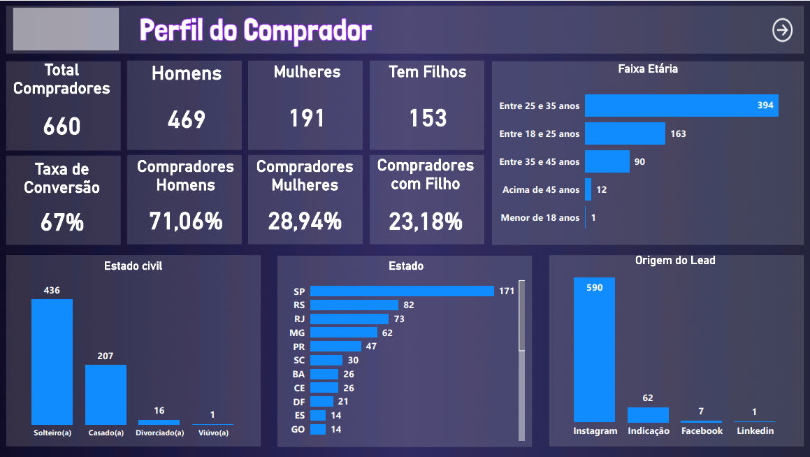
Insights
A análise dos dados apresentados no dashboard revelou insights valiosos sobre o perfil dos mentorados:
- Público Principal e Taxa de Conversão:
- O painel indica um Total de Compradores de 660 indivíduos.
- A Taxa de Conversão geral é de 67%, com 71,06% de Compradores Homens e 28,94% de Compradoras Mulheres.
- Curiosamente, 23,18% dos Compradores possuem filhos, oferecendo um detalhe sobre o perfil familiar.
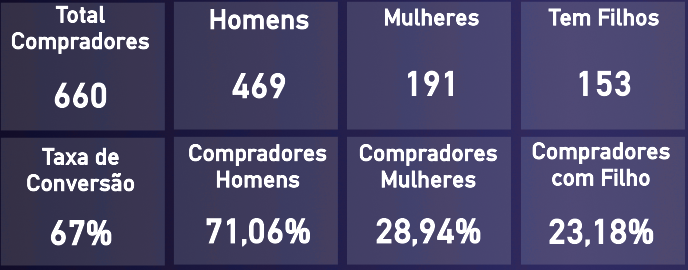
- Distribuição Demográfica:
- Entre os indivíduos analisados, a maioria tem entre 25 e 35 anos (394), seguido por 18 a 25 anos (163) e 35 a 45 anos (90). Isso aponta para um público predominantemente jovem a meia-idade.
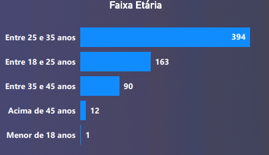
- A distribuição por Estado Civil mostra que a maior parte é Solteira (436), seguida por Casado(a) (207).
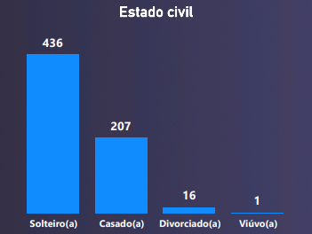
- Em termos de Origem do Lead, o Instagram (590) é a principal fonte, destacando a relevância dessa plataforma para o engajamento desse público.
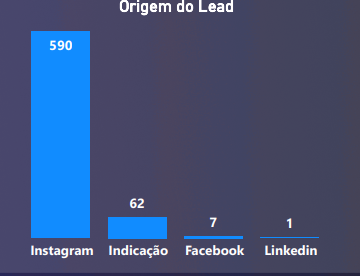
- A distribuição geográfica dos leads é concentrada em SP (171), RS (82) e RJ (73), indicando os principais mercados de interesse.
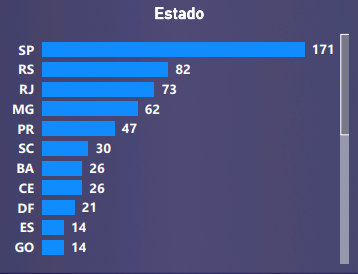
- Entre os indivíduos analisados, a maioria tem entre 25 e 35 anos (394), seguido por 18 a 25 anos (163) e 35 a 45 anos (90). Isso aponta para um público predominantemente jovem a meia-idade.
- Perfil Profissional e Aspirações:
- A Média Salarial dos participantes é de R$ 3.778 fornecendo um panorama financeiro.
- Um percentual significativo de 87,88% dos indivíduos tem interesse em Migrar para uma Nova Área, sublinhando a busca por desenvolvimento e novas oportunidades de carreira.
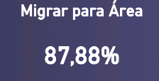
- Em relação ao Tempo Disponível para Estudo, a maior parte dedica 2 a 4 horas (270 pessoas), seguido por 1 a 2 horas (236 pessoas), o que é importante para o planejamento de programas de estudo.
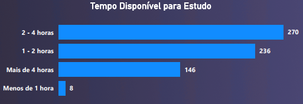
- A Média Salarial dos participantes é de R$ 3.778 fornecendo um panorama financeiro.
- Nível de Conhecimento e Formação:
- A análise de conhecimento em Excel (66,21%) é a mais alta, seguida por Conhecimento em Dados (44,85%) e Power BI (22,58%). O conhecimento em SQL (14,55%) e Gestão de Projetos (18,33%) são menores, indicando lacunas potenciais.
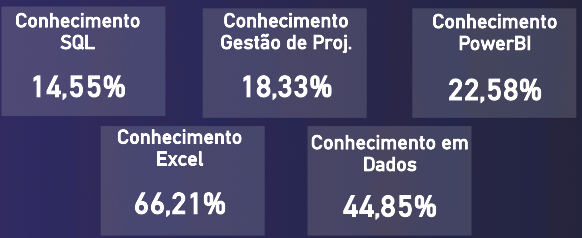
- Em termos de Formação, a maioria possui Ensino Superior Completo (302), seguido por Ensino Superior Incompleto (161) e Ensino Médio Completo (147).
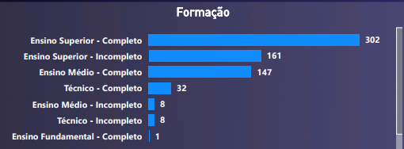
- No detalhe de Conhecimento em Power BI, Excel e SQL, a categoria “Básico” é a mais comum, e um percentual considerável “Nunca teve contato”, especialmente em SQL e Power BI. Isso ressalta a necessidade de programas de formação fundamental nessas áreas.
- Aprofundando em Conhecimento em Power BI (DAX, M), 346 pessoas têm nível básico. Em Nível em Excel, 346 estão no básico. Em Nível de SQL, 243 estão no básico. Isso reforça a demanda por capacitação introdutória.
- Quanto ao contato com Kanban/Scrum, a maioria “Não teve contato” (378) ou “Tem dificuldade” (180), indicando uma oportunidade para treinamento em metodologias ágeis.
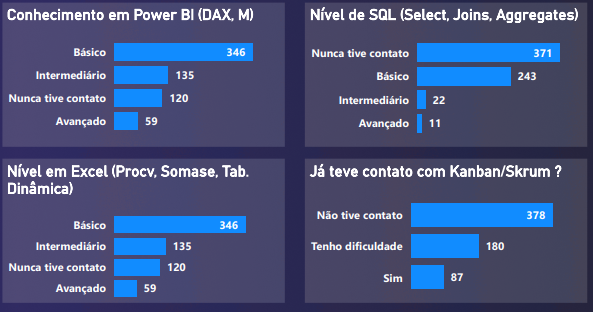
- A análise de conhecimento em Excel (66,21%) é a mais alta, seguida por Conhecimento em Dados (44,85%) e Power BI (22,58%). O conhecimento em SQL (14,55%) e Gestão de Projetos (18,33%) são menores, indicando lacunas potenciais.
Considerações
O dashboard oferece uma base sólida para aprimorar programas de capacitação e estratégias de recrutamento. A partir dos insights obtidos, algumas considerações importantes surgem:
- Desenvolvimento de Habilidades: Há uma clara demanda por conhecimento em Dados e Excel, e uma oportunidade para programas de base em Power BI e SQL, visto que muitos estão em nível básico ou nunca tiveram contato.
- Atração e Engajamento: O Instagram é um canal eficaz para atrair leads. Compreender o perfil do público (jovens adultos, solteiros) e suas aspirações (migrar de área, buscar desenvolvimento) pode otimizar as campanhas de engajamento.
- Adaptação de Programas de Estudo: A maioria dos mentorados dispõe de 2 a 4 horas para estudo, o que deve ser considerado ao estruturar a carga horária e o formato dos cursos.
- Treinamento em Metodologias Ágeis: A alta proporção de pessoas sem contato ou com dificuldade em Kanban/Scrum sugere uma grande demanda latente por essa habilidade, essencial no mercado de trabalho atual.
- Segmentação por Região: A concentração de leads em estados como SP, RS e RJ pode guiar a alocação de recursos e a realização de eventos presenciais ou focados regionalmente.
Conclusão
O Dashboard foi uma ferramenta analítica estratégica que transformou dados brutos em inteligência que geraram impacto para a empresa. Sua principal contribuição residiu na capacidade de:
- Fornecer um panorama detalhado das características demográficas, acadêmicas e profissionais dos mentorados.
- Identificar lacunas de conhecimento e áreas de alta demanda por desenvolvimento de habilidades.
- Permitir a personalização de ofertas de capacitação e a otimização de estratégias de engajamento.
Esse projeto teve como resultado: - Otimização de Custos de Marketing em 30%: Contribuição direta para a redução de 30% nos custos de marketing dos clientes, através do desenvolvimento de dashboards que permitiram a análise de performance de campanhas e a otimização da alocação de investimentos. Este resultado foi alcançado após propor uma nova estratégia de segmentação de público, baseada em insights extraídos da análise de dados, para direcionar os funis de venda de forma mais eficaz.